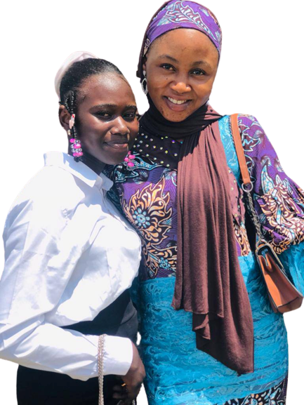

Welcome to my Portfolio!

I'm Bello Zainab.O
Am a Web developer eager to dive into the world of web development,

Welcome to my Portfolio!

As a Web development, also known as website development,
refers to the tasks associated with creating,
building, and maintaining websites.

As a Web designing is the process of planning, conceptualizing,
and implementing the plan for designing a website in
a way that is functional and
offers a good user experience

As a Website maintenance includes tasks like ensuring all
the links on your site are working,
regularly updating content, and fixing any broken links.
Welcome to my Website and also again am a web developer.I will like you to view on my page and comment on it.
THANK YOU!